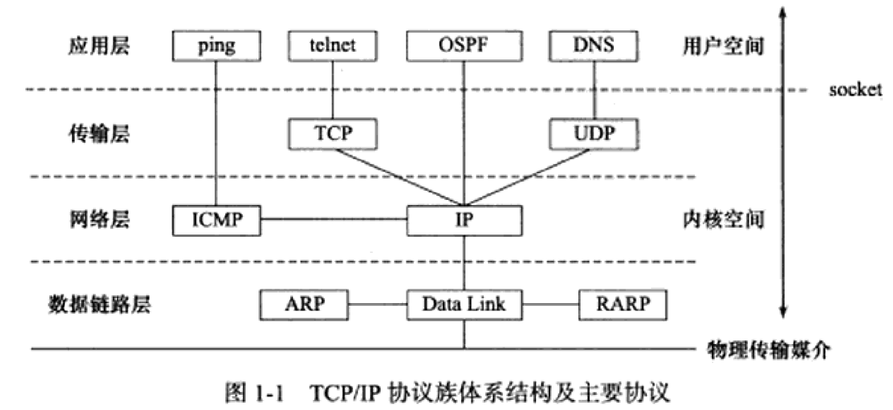
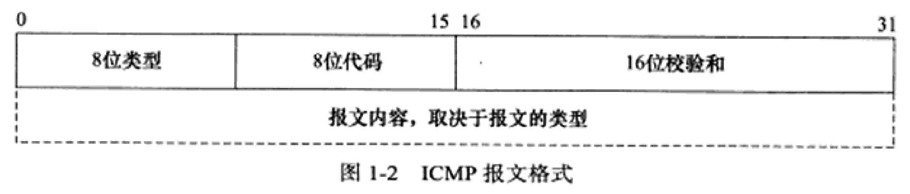
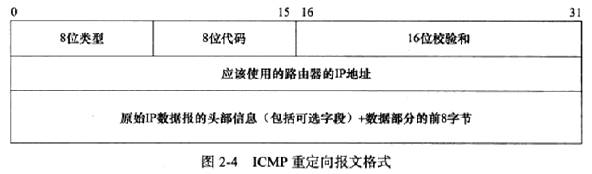
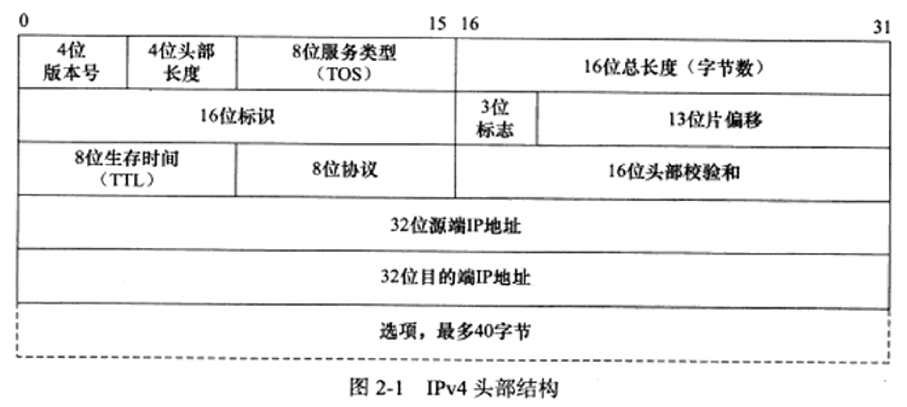
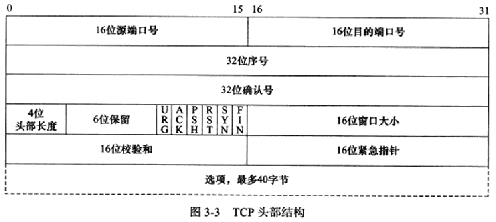

<ol class="markdown-toc"><li class="markdown-toc-item markdown-toc-level-2"><a class="markdown-toc-link" href="#%E5%9B%BE"><span class="markdown-toc-text">图</span></a><ol class="markdown-toc-child"><li class="markdown-toc-item markdown-toc-level-3"><a class="markdown-toc-link" href="#TCP-IP"><span class="markdown-toc-text">TCP&#x2F;IP</span></a></li><li class="markdown-toc-item markdown-toc-level-3"><a class="markdown-toc-link" href="#ICMP%E6%8A%A5%E6%96%87%E6%A0%BC%E5%BC%8F"><span class="markdown-toc-text">ICMP报文格式</span></a></li><li class="markdown-toc-item markdown-toc-level-3"><a class="markdown-toc-link" href="#ICMP%E9%87%8D%E5%AE%9A%E5%90%91%E6%8A%A5%E6%96%87"><span class="markdown-toc-text">ICMP重定向报文</span></a></li><li class="markdown-toc-item markdown-toc-level-3"><a class="markdown-toc-link" href="#IPv4%E5%A4%B4"><span class="markdown-toc-text">IPv4头</span></a></li><li class="markdown-toc-item markdown-toc-level-3"><a class="markdown-toc-link" href="#TCP%E5%A4%B4"><span class="markdown-toc-text">TCP头</span></a></li></ol></li><li class="markdown-toc-item markdown-toc-level-2"><a class="markdown-toc-link" href="#%E5%85%B6%E4%BB%96"><span class="markdown-toc-text">其他</span></a></li><li class="markdown-toc-item markdown-toc-level-2"><a class="markdown-toc-link" href="#TODO"><span class="markdown-toc-text">TODO</span></a></li></ol>
<article>
  <div class="markdown"><h2 id="图"><a href="#图" class="headerlink" title="图"></a>图</h2><h3 id="TCP-IP"><a href="#TCP-IP" class="headerlink" title="TCP/IP"></a>TCP/IP</h3><p></p>
<h3 id="ICMP报文格式"><a href="#ICMP报文格式" class="headerlink" title="ICMP报文格式"></a>ICMP报文格式</h3><p></p>
<h3 id="ICMP重定向报文"><a href="#ICMP重定向报文" class="headerlink" title="ICMP重定向报文"></a>ICMP重定向报文</h3><p></p>
<h3 id="IPv4头"><a href="#IPv4头" class="headerlink" title="IPv4头"></a>IPv4头</h3><p></p>
<h3 id="TCP头"><a href="#TCP头" class="headerlink" title="TCP头"></a>TCP头</h3><p></p>
<h2 id="其他"><a href="#其他" class="headerlink" title="其他"></a>其他</h2><ul>
<li>/etc/services: 系统常用端口号</li>
</ul>
<h2 id="TODO"><a href="#TODO" class="headerlink" title="TODO"></a>TODO</h2><p>BGP, RIP, OSPF</p>
</div>
</article>

